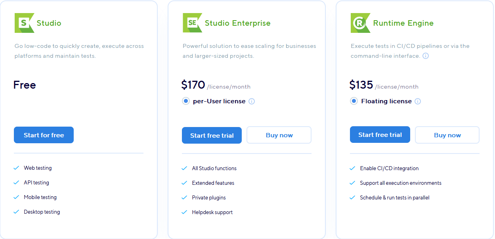
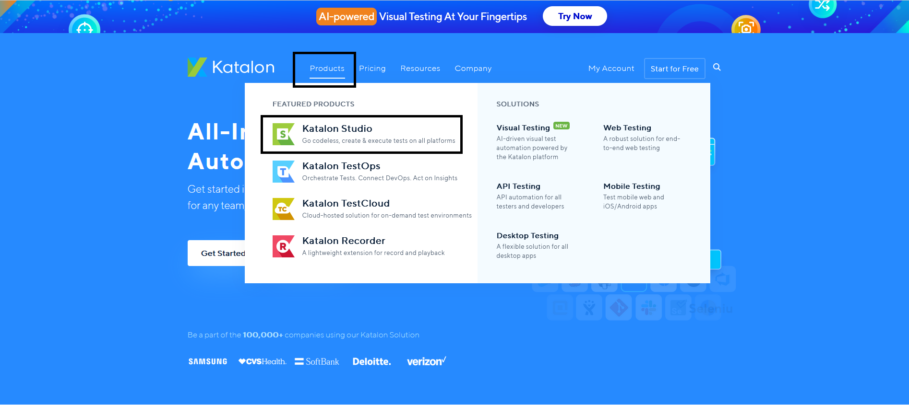
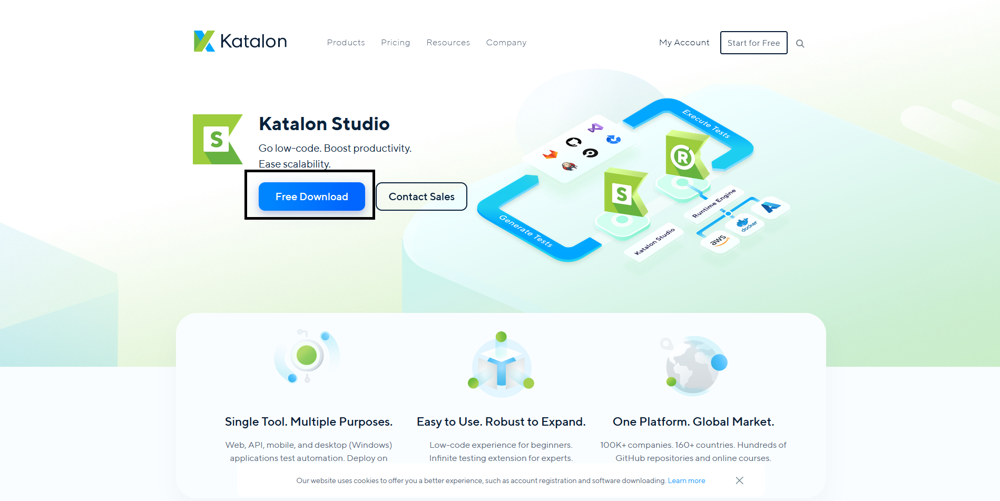
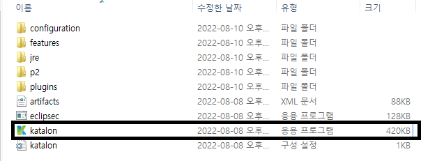

Katalon Studio
Katalon Studio is a 2020 Customers' Choice in Software Test Automation.
Katalon is ranked as a Top Automated Testing Software. - Quoted from KatalonStudio Homepage
What is it?
이중 호환 인터페이스를 제공하여 테스트 사례를 생성한다
숙달되지 않은 사용자를 위해 구문 강조 표시와 지능형 코드 완성 기능으로 테스팅을 제공한다
키워드 중심 접근 방식을 사용하여 개발되었다
교차 환경 테스트 실행을 지원한다
Grooby와 Java 언어를 주로 사용한다
HTML, JavaScript, Ajax, Windows, Win32, UWP, WinForms, WPF, Firefox, Chrome, MicrosoftEdge, Internet Explorer(9, 10, 11), Safari, Android and iOS, SOAP를 지원한다
무료 오픈 소스이며 여러 프로그래밍 언어를 지원한다
Web, API, Mobile, Desktop 등 다양한 분야의 테스팅이 가능하다
Why use Catalon Studio?
Selenium의 기능을 이어받아 단순하고 강력한 연속 테스트 솔루션을 갖추고 있다
웹이 완전히 로드될 때까지 기다리고 타이밍 코드가 따로 필요하지 않다
테스트 개체를 효율적으로 찾아 탐지 및 저장하여 스크립팅 프로세스 속도를 높인다
모든 UI 요소를 자동으로 저장하여 테스트를 쉽게 생성할 수 있다. (재사용성)
다양한 기본 제공 키워드로 빠르게 테스팅을 할 수 있다
Payment
Free - Web, API, Mobile, Desktop 분야의 테스팅이 가능하고 가장 기본적인 버전이다
Enterprise(월 170달러) - Katalon Studio의 모든 기능을 사용할 수 있고 플러그인이 제공된다
How to Download
1. Katalon 홈페이지 접속
https://katalon.com/2. Product → Katalon Studio 클릭 (계정 생성 필요)
3. Free Download 클릭
4. 다운받은 파일 압축 풀기
5. 압축 폴더 내의 katalon.exe 파일 실행
